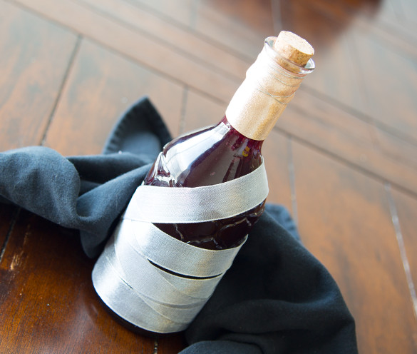

Pungent Blood Cocktail

Throw to draw in beasts.
"Mature blood cocktail that releases a pungent odor when thrown that attracts blood-thirsty beasts. A precious tool in sadly short supply. In Yharnam, they produce more blood than alcohol. as the former is the more intoxicating."
Ingredients:
- 1 bottle red wine
- ⅓ cup triple sec
- ½ cup pomegranate juice
- 2 tbsp brown sugar
- 2 blood orange, sliced
- 1 apple, cubed
- 2 lime, sliced
Instructions:
- In a pitcher place the cut fruit and brown sugar.
- Mix the items in the pitcher until the sugar coats the fruit.
- Add the triple sec, pomegranate juice and the red wine. Stir until well combined. Taste and adjust the sugar levels based on your palate.
- Refrigerate for at least 1 hour and enjoy!
Return to Recipes